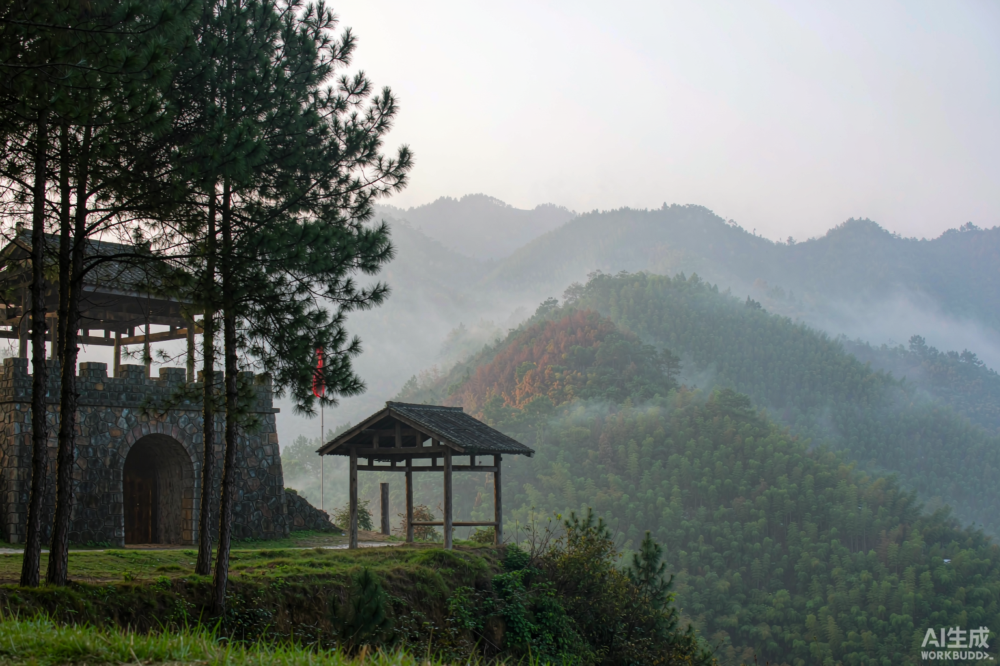

罗霄山脉中段，五百里林海。1927 年 10 月，毛泽东率秋收起义部队引兵井冈， 创建了中国第一个农村革命根据地——中国革命由此找到了"农村包围城市"的道路。
两年零四个月的井冈山斗争，在中国革命史上写下浓重一笔
秋收起义受挫后，毛泽东在文家市作出"向农村进军"的重大决策，放弃攻打长沙，沿罗霄山脉南移。
工农革命军抵达井冈山北麓的茨坪，开始创建中国第一个农村革命根据地，点燃"工农武装割据"的星星之火。
朱德、陈毅率南昌起义余部与湘南农军到达宁冈砻市，与毛泽东领导的部队会师，成立工农革命军第四军（后称红四军），红军力量空前壮大。
红军以不足一个营的兵力，凭借黄洋界天险击退敌军四个团的进攻，保卫了根据地。毛泽东闻讯写下《西江月·井冈山》。
主力红军转战赣南闽西开辟中央苏区，井冈山两年零四个月的斗争实践，为中国革命留下了最宝贵的道路探索与精神财富。
走进历史现场 · 全部免费开放

井冈山五大哨口之首，海拔 1343 米。1928 年黄洋界保卫战以少胜多——"黄洋界上炮声隆，报道敌军宵遁"。极目远眺，云海翻腾如昔日烽烟。

茅坪村一栋土砖结构的三层小楼，因楼上天窗呈八角形得名。毛泽东在此写下《中国的红色政权为什么能够存在？》《井冈山的斗争》两篇光辉著作，一根灯芯的油灯照亮了中国革命的道路。

宁冈砻市。1928 年 4 月朱毛两双大手在这里紧紧相握，两支铁流汇成一股。龙江书院是朱毛会见的第一地点，被誉为"我军军政院校的摇篮"。

中国第一个地方性革命史类博物馆，馆藏文物 3 万余件。从一盏油灯、一根扁担、一面红旗中，读懂"井冈山道路"如何通向新中国。
跨越时空的精神坐标
在白色恐怖的重围中，井冈山军民始终对革命前途充满信心——星星之火可以燎原的信念从未动摇。
不照搬"城市中心论"，从中国国情出发开辟农村包围城市、武装夺取政权的崭新道路。
红米饭、南瓜汤，一根灯芯、一把野菜。在最艰难的岁月里，军民靠一双脚板、一副铁肩守住根据地。
"三大纪律、六项注意"从这里走向全军。打土豪分田地，让穷苦人第一次挺直腰杆——人民就是江山。
黄洋界上一炮退敌，是对"敌军围困万千重，我自岿然不动"的最好注脚。
井冈山精神与苏区精神、长征精神一脉相承，共同构成中国共产党人的精神谱系源头。
井冈山的红色文化，浸润在山水草木之间。漫山的翠竹被喻为"井冈翠竹"——竹钉阵退敌兵、竹扁担挑军粮，袁鹰笔下《井冈翠竹》写的正是这股坚韧不拔的气节；每年四五月，十里杜鹃长廊花开如焰，像先烈的热血洒满山岗。
红色歌谣在这里口口相传：《十送红军》的旋律源自赣南采茶戏的调子，《映山红》唱的正是井冈的杜鹃。红军挑粮小道至今蜿蜒于林间，走进它，就走进了那段"红米饭、南瓜汤"的岁月。